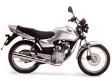

- Inicio
- Motos Deportivas
- Motos Naked
- Motos Deportivas Junior
- Calle
- Motos tipo Turismo, Sport-Turismo y Trails
- Motos Custom y Choppers
- Motos Scooters, MaxiScooters y Ciclomotores
- Motos Cross y Enduro
- Motos Supermoto
Tipos de motos
- Cuatrimotos y Motos Triciclos
- Motos de Nieve
- Minimotos o "pocket Bikes"
- Motos de "trial"
Otras motos

Calle
Motos para usar en la ciudad y para trabajar
En este segmento incluimos las motos que tienen diseño sin carenado (carrocería) y que son exclusivas de ciudad
Bajo la definición Calle están todas aquellas motos de baja cilindrada 100cc a 250cc, que están diseñadas para uso de ciudad, ya sea como transporte o trabajo. Estas motos son muy económicas, tanto por su precio como por su consumo. Y para facilitar su manejo en ciudades congestionadas son livianas y ágiles.
También la mayoría de marcas como Bajaj, Auteco, UM, Yamaha, Kawasaki, Suzuki, etc., cuentan con este tipo de motos entre sus catálogos.
Ejemplos de estas motos son: Pulsar, Boxer, YBR, GS-125, GN-125